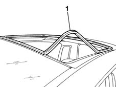

7030B21 seal of sliding roof glass, front or rear - r r
- Path
- Procedures > 70 FITTINGS > 7030 SUN ROOF AND HOOD > 7030B sliding roof > 7030B21 seal of sliding roof glass, front or rear - r r
- Kind
- repair procedure (removal / refitting; the operation number is the code)
- Applies to
- all engines; all production periods
- Interactive page
- https://sloeber94.github.io/elrnDB-lYpsln/en/#/2429554
Applies to: all engines; all production periods
 Removing
Removing
 Refitting
Refitting7030B18 sliding roof glass - r+r
1. Remove the glass panel seal from the housing.

Applies to: all engines; all production periods
Refitting
RemovingThoroughly clean any residues of sealant on the seal from the inner perimeter of the seal and the bodyshell.
Fit the glass panel seal and adjust it making sure that it is correctly fitted in the housing.